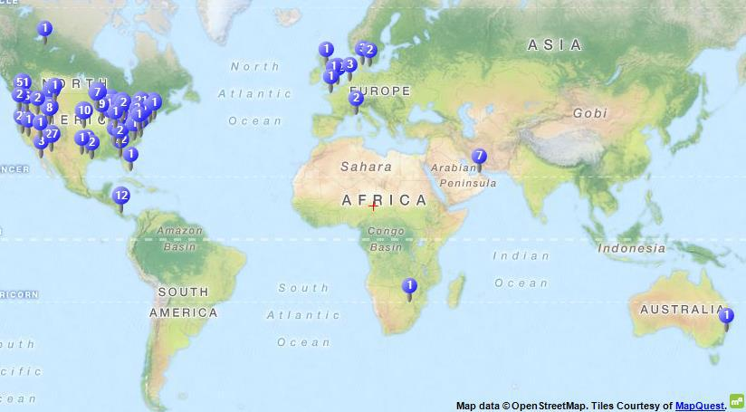
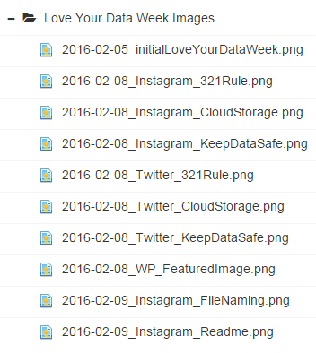
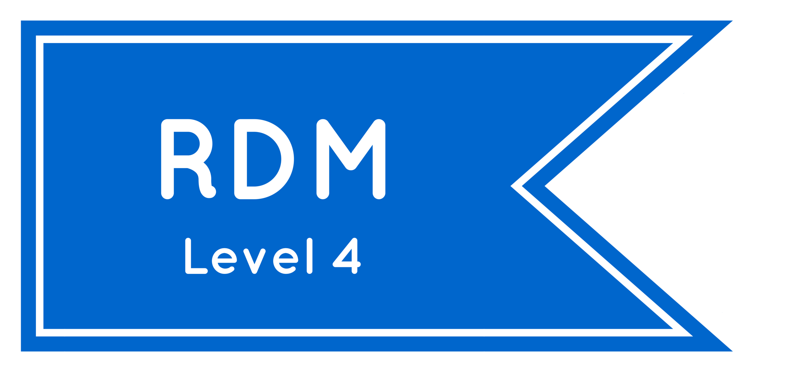

#LYD16 Recap
This past week, February 8-12th, was Love Your Data Week!! Is there a more perfect holiday for data librarians, especially right before Valentine's Day??
#LYD16 was a social media event coordinated officially by 27 academic and research institutions, of which both NYU Data Services and NYU Health Sciences Library were a part. The idea behind this social media blitz was to raise awareness of research data management and the support/resources for RDM at each individual institution.
Although just under 30 institutions officially were a part of the team, MANY MORE ended up joining the conversation on social media and jumping in, sharing their own thoughts and resources. We saw input from commercial organizations, researchers, faculty members, librarians, non-profits, and even academic journals! It was really great to see a conversation started around data stewardship and the importance of loving your data as much as it loves you!
It's Love Your Data Week! Today's message: Respect your data - give and get credit https://t.co/Au9yxcHd7g #LYD16
— Dryad (@datadryad) February 11, 2016
What was also super neat about Love Your Data Week is that, although it was clearly US-centric, we had participation across the globe! I even tried to tweet in French to someone in France writing about #LYD16 (and had that tweet quickly edited by my French boyfriend. I'm trying!!).
Map of where #LYD16 tweets were coming from! I made this in NVivo 11~
Each day of the week had it’s own theme where everyone shared tips and tricks, stories, examples, resources, and experts:
- Monday: Keeping Your Data Safe
- Tuesday: Organizing Your Data
- Wednesday: Documenting Your Data
- Thursday: Getting Credit for Your Data
- Friday: Reusing and Reproducing Your (and others'!) Data
#LYD16 also happened to coincide with the deployment of Nick and I’s ongoing project, Data Dispatch. You’ll see that if you click on the above links, you’ll get directed to posts on this blog! This site is replacing the previous Data Services blog, and has been in the works in one form or another since Nick arrived at Data Services (two weeks after me). The old blog was another avenue for the department to advertise classes, events, or push out the cool link or two. This new platform functions more as a space to show off the cool data that comes through our doors, in addition to the features of the last blog (advertising us, our classes, and services). With this new site, we are hoping to create more of a conversation about data-driven initiatives both here and beyond NYU.
Anyway, for #LYD16 Nick and I organized ourselves using our collaborative Open Science Framework project, "Data Management Team Planning." The first thing we did was create a separate wiki page for our #LYD16 planning. On this wiki, we wrote down our social media etiquette. For instance: Vicky will tweet from @nyudataservices, then Nick and Vicky will retweet, or Vicky will instagram this photo and using IFTTT, push it out onto her tumblr. Basically, we set up some basic ground rules for posting during the week. Everything #LYD16!!
A portion of this page was dedicated to scheduling our social media blasts. We made this editorial calendar so we could coordinate who would be responsible for what during the week. Since the OSF wiki supports the amazing feature of strikethrough, I had a blast crossing things off our list as the week progressed.

Nick and I made a nice editorial calendar on our collaborative OSF wiki!
Everything in our editorial calendar was linked out to our images in OSF Storage. This made everything really easy to execute week-of and day-of. He and I could just go to the appropriate day, click the link for the images, download them, and schedule them to be tweeted/instagrammed at the agreed upon time. By having everything centralized via OSF, it was much easier for us to coordinate, especially since I spend one day a week in a different office space. You might not think that's a lot, but Nick and I spend a good amount of our day-to-day with each other planning and coordinating, so not having him right there is mildly annoying when I'm in Brooklyn.
Just one page of many for our #LYD16 images.
After the fact, we wanted to examine some of the impact that Love Your Data week had on our Data Services social media presence. We captured the tweets using the hashtag #LYD16 via NCapture, a browser extension for NVivo, a qualitative data software from QSR International. This was great because we could perform some network analysis as well as do some basic word-frequency queries, cluster analysis, and mapping if the tweets are geocoded (some but not all are for our #LYD16 dataset!).
In this little chart we made in NVivo, usernames ranked by how often they were mentioned with #LYD16--@nyudataservices and @VickySteeves are in the top 10!

AND if you all followed our advice, you might have enough points for a nifty RDM Badge to show off to all your friends, followers, and colleagues!
I am definitely a level 4! Which are you?